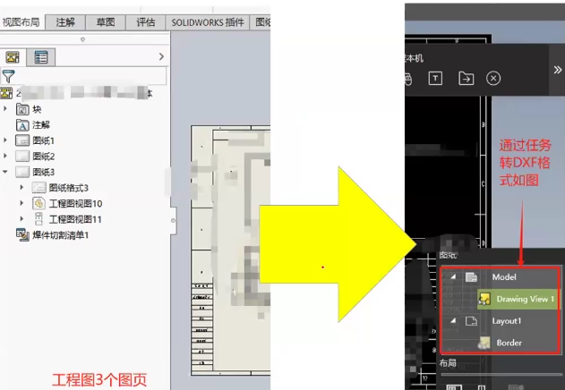
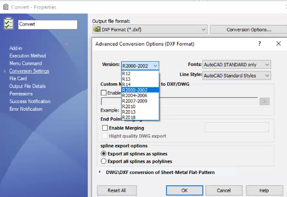

<!DOCTYPE html>
<html><head>
    <title>SOLIDWORKS-Solution</title><meta charset="utf-8">
    
<link rel="stylesheet" href="/SOLIDWORKS-Solution/css/main.css">
<!-- 引入配置文件 -->
    
<link rel="stylesheet" href="/SOLIDWORKS-Solution/lib/font-awesome/css/font-awesome.min.css">
<!-- 字体图片库 -->
    
<link rel="stylesheet" href="/SOLIDWORKS-Solution/lib/highlight/styles/atom-one-dark.css">
<!-- 代码高亮库 -->
<meta name="generator" content="Hexo 6.3.0"></head>
<body>
    <div id="main">
        <aside id="aside"><!-- 搜索栏 -->
<div id="search"><input class="search-input" type="text" placeholder="search"><icon id="search-icon" class="fa fa-bars" title="收起目录"></div>
<!-- 侧边目录栏 -->
<div id="tree">
</aside>		<!-- 引入侧边栏-->
        <nav><div>
    <!-- 显示侧边栏 --><icon id="asideshow" class="fa fa-bars" title="显示侧边栏"></icon><ul id="menu">
    <!-- 内部链接本页面直接跳转 -->
    
    <li class="menu-item"><a href="index.html" class="menu-item-link">主页</a></li>
    
    <li class="menu-item"><a href="search/index.html" class="menu-item-link">搜索</a></li>
    
    <li class="menu-item"><a href="工具网站/index.html" class="menu-item-link">网站</a></li>
    
    <!-- 外部链接打开新的窗口跳转 -->
    
    <li class="menu-item"><a href="https://www.ict.com.cn/" class="menu-item-link" target="_blank">智诚ICT</a></li></ul>
</div></nav>	<!-- 引入导航 -->
        <div id="content"><div>
    <span id="post-author">作者: ICT</span>
    <span id="post-date">2025-03-04 16:19:10</span>
</div>

<div id="article"><h1 id="多图纸转DXF缺失"><a href="#多图纸转DXF缺失" class="headerlink" title="多图纸转DXF缺失"></a>多图纸转DXF缺失</h1><p>多图纸转DXF缺失</p>


<h2 id="问题"><a href="#问题" class="headerlink" title="问题"></a>问题</h2><p>在使用的多页工程图文件，通过PDM任务转档DXF后</p>



<p>转档设置的DXF版本选择错误</p>
<p>PDM管理工具-DXF转档任务-属性-转换设定页-输出格式DXF-右边“转换选项”:</p>
<p>默认版本R12不支持多页输出</p>
<p>选择R2000-2002</p>

</div>
 			<!-- 引入正文 -->
    </div>	
    
<script src="/SOLIDWORKS-Solution/lib/highlight/highlight.pack.js"></script>
<!-- 引入代码高亮的 js -->
    
<script src="/SOLIDWORKS-Solution/lib/jquery-3.4.1.min.js"></script>
	<!-- 引入 jquery -->
    
<script src="/SOLIDWORKS-Solution/lib/jquery.pjax.js"></script>
		<!-- 引入 pjax -->
    
<script src="/SOLIDWORKS-Solution/js/main.js"></script>
					<!-- 引入 js 文件 -->
	
<script src="/SOLIDWORKS-Solution/js/search.js"></script>
					<!-- 引入 js 文件 -->	
	<script type="text/javascript">      
     var search_path = "search.xml";
	 if (search_path.length == 0) {search_path = "search.xml";} var path = '/' + search_path;
     searchFunc(path, 'local-search-input', 'local-search-result');
	</script>

	<script type="module">import mermaid from 'https://cdn.jsdelivr.net/npm/mermaid@10/dist/mermaid.esm.min.mjs'; 
	mermaid.initialize({ theme: 'forest'});
	</script> <!-- 引入 mermaid 流程图 -->
</body></html>